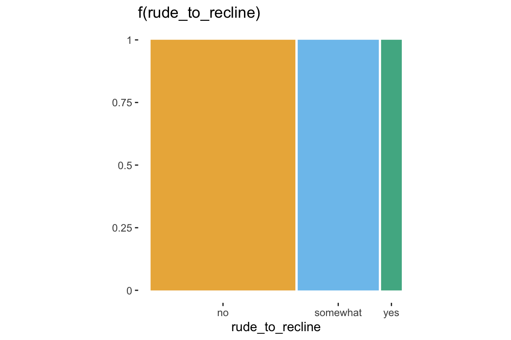
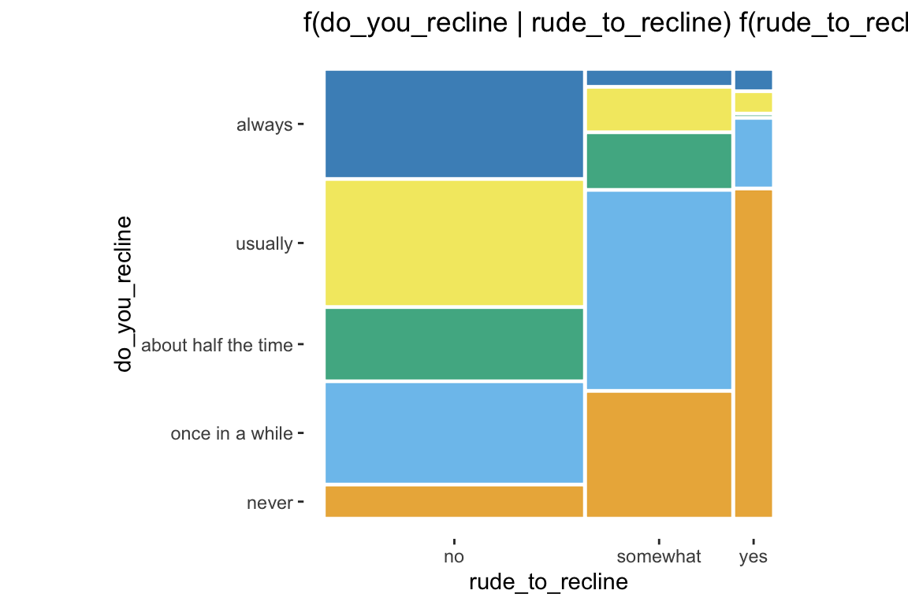
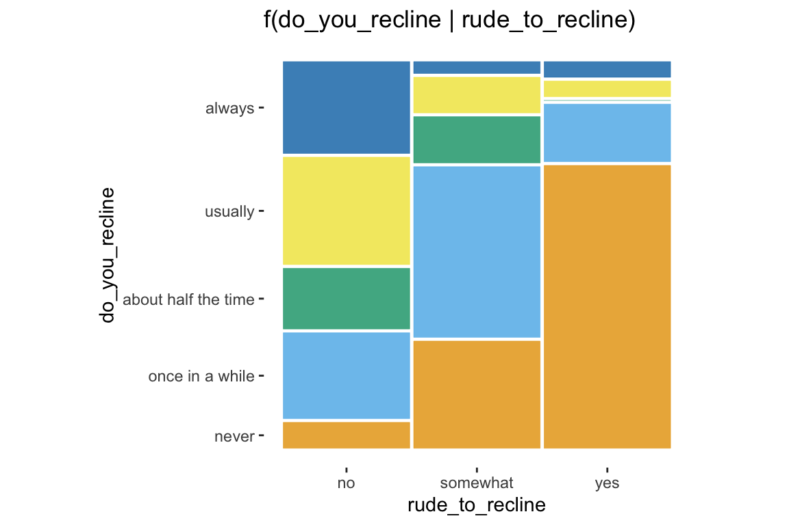
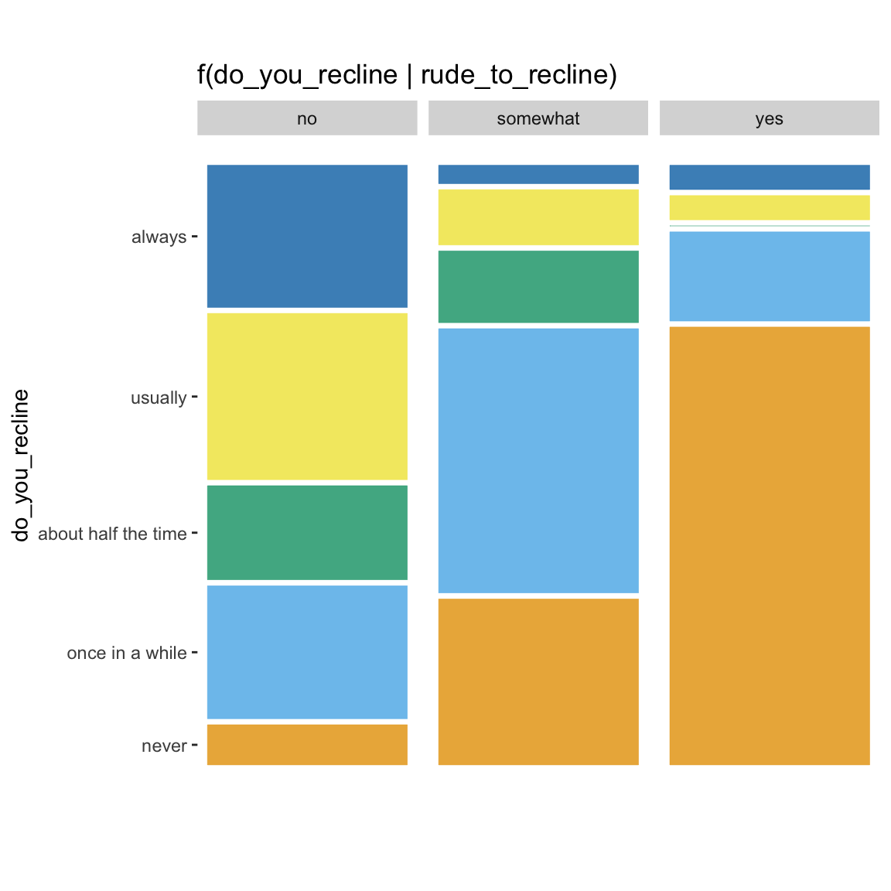
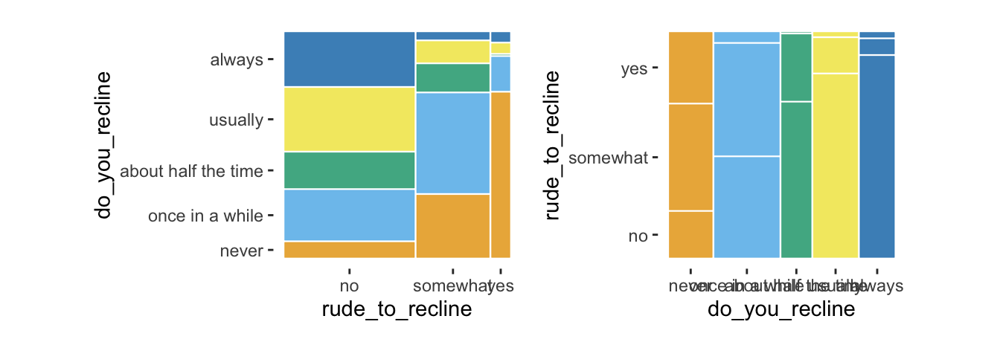
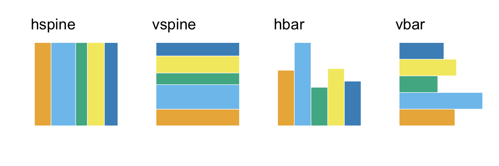
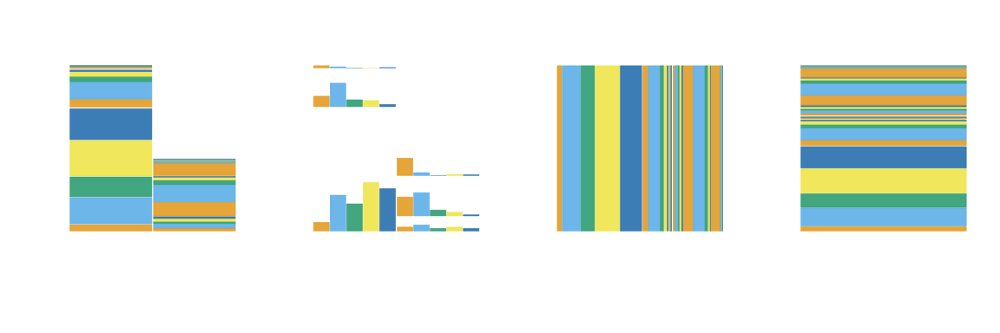
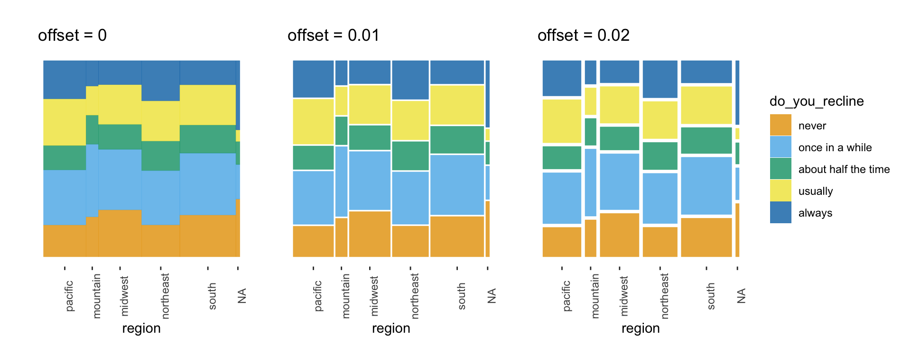

Mosaic plots with ggplot2
Haley Jeppson and Heike Hofmann
2019-04-12
Source:vignettes/ggmosaic.Rmd
ggmosaic.Rmd
Introduction to ggmosaic
- designed to create visualizations of categorical data
- can produce bar charts, stacked bar charts, mosaic plots, and double decker plots
- plots are constructed hierarchically, so the ordering of the variables is very important.
- integrated in ggplot2 as a
geomwhich allows for facetting and layering
ggmosaic was created primarily using ggproto and the productplots package. ggproto allows you to extend ggplot2 from within your own packages.
-
ggmosaicbegan as a geom extension of therectgeom - used the data handling provided in the
productplotspackage - calculates xmin, xmax, ymin, and ymax for the
rectgeom to plot
ggplot2 limitations
ggplot2 is not capable of handling a variable number of variables
current solution: read in the variables x1 and x2 as x = product(x1, x2)
-
productfunction: - a wrapper function for a list
allows for it to pass
check_aesthetics
geom_mosaic: setting the aesthetics
Aesthetics that can be set:
- weight : select a weighting variable
-
x : select variables to add to formula
- declared as x = product(x1, x2, …)
-
fill : select a variable to be filled
- if the variable is not also called in x, it will be added to the formula in the first position
-
conds : select a variable to condition on
- declared as conds = product(cond1, cond2, …)
These values are then sent through productplots functions to create the formula for the desired distribution
Formula: weight ~ fill + x | conds
From the aesthetics to the formula
Example of how the formula is built
- weight = 1
- x = product(Y, X)
- fill = W
- conds = product(Z)
These aesthetics set up the formula for the distribution:
Formula: 1 ~ W + X + Y | Z
Because a mosaic plot is constructed hierarchically through alternating spines, the ordering of the variables is very important.
1 ~ X
ggplot(data = fly) +
geom_mosaic(aes(x = product(RudeToRecline), fill=RudeToRecline), na.rm=TRUE) +
labs(title='f(RudeToRecline)')
1 ~ Y + X
ggplot(data = fly) +
geom_mosaic(aes(x = product(DoYouRecline, RudeToRecline), fill=DoYouRecline), na.rm=TRUE) +
labs(title='f(DoYouRecline | RudeToRecline) f(RudeToRecline)')
1 ~ X + Y / Z
ggplot(data = fly) +
geom_mosaic(aes(x = product(DoYouRecline, RudeToRecline), fill=DoYouRecline, conds=product(Gender)), na.rm=TRUE, divider=mosaic("v")) +
labs(title='f(DoYouRecline, RudeToRecline| Gender)')
Alternative to conditioning: facetting
ggplot(data = fly) +
geom_mosaic(aes(x = product(DoYouRecline, RudeToRecline), fill=DoYouRecline), na.rm=TRUE) +
labs(title='f(DoYouRecline, RudeToRecline| Gender)') +
facet_grid(Gender~.)
Importance of ordering
order1 <- ggplot(data = fly) +
geom_mosaic(aes(x = product(DoYouRecline, RudeToRecline), fill=DoYouRecline), na.rm=TRUE)
order2 <- ggplot(data = fly) +
geom_mosaic(aes(x = product(RudeToRecline, DoYouRecline), fill=DoYouRecline), na.rm=TRUE) +
coord_flip()
grid_arrange_shared_legend(order1, order2, ncol = 2, nrow = 1, position = "right")
Other features of geom_mosaic
Arguments unique to geom_mosaic:
- divider: used to declare the type of partitions to be used
- offset: sets the space between the first spine
Divider function: Types of partitioning
Four options available for each partion:
- vspine: width constant, height varies.
- hspine: height constant, width varies.
- vbar: height constant, width varies.
- hbar: width constant, height varies.
hbar <- ggplot(data = fly) +
geom_mosaic(aes(x = product(RudeToRecline), fill=RudeToRecline), divider="hbar", na.rm=TRUE) +
labs(title='divider = "hbar"')
hspine <- ggplot(data = fly) +
geom_mosaic(aes(x = product(RudeToRecline), fill=RudeToRecline), divider="hspine", na.rm=TRUE) +
labs(x=" ", title='divider = "hspine"')
vbar <- ggplot(data = fly) +
geom_mosaic(aes(x = product(RudeToRecline), fill=RudeToRecline), divider="vbar", na.rm=TRUE) +
labs(y=" ", x="", title='divider = "vbar"')
vspine <- ggplot(data = fly) +
geom_mosaic(aes(x = product(RudeToRecline), fill=RudeToRecline), divider="vspine", na.rm=TRUE) +
labs(y=" ", x="", title='divider = "vspine"')
grid_arrange_shared_legend(hbar, hspine, vbar, vspine, ncol = 2, nrow = 2, position = "bottom")
Partitioning with one or more variables
-
mosaic()
- default
- will use spines in alternating directions
- begins with a horizontal spine
-
mosaic(“v”)
- begins with a vertical spine and then alternates
-
ddecker()
- selects n-1 horizontal spines and ends with a vertical spine
- Define each type of partition
- c(“hspine”, “vspine”, “hbar”)
h_mosaic <- ggplot(data = fly) +
geom_mosaic(aes(x = product(DoYouRecline, RudeToRecline, Gender), fill=DoYouRecline), na.rm=T, divider=mosaic("h")) +
theme(axis.text.x=element_blank(), legend.position="none") +
labs(x=" ", title='divider= mosaic()')
v_mosaic <- ggplot(data = fly) +
geom_mosaic(aes(x = product(DoYouRecline, RudeToRecline, Gender), fill=DoYouRecline), na.rm=T, divider=mosaic("v")) +
theme(axis.text.x=element_blank()) +
labs(x=" ", title='divider= mosaic("v")')
doubledecker <- ggplot(data = fly) +
geom_mosaic(aes(x = product(DoYouRecline, RudeToRecline, Gender), fill=DoYouRecline), na.rm=T, divider=ddecker()) +
theme(axis.text.x=element_blank()) +
labs(x=" ", title='divider= ddecker()')
grid_arrange_shared_legend(h_mosaic, v_mosaic, doubledecker, ncol = 2, nrow = 2, position = "bottom")mosaic4 <- ggplot(data = fly) +
geom_mosaic(aes(x = product(DoYouRecline, RudeToRecline, Gender), fill=DoYouRecline), na.rm=T, divider=c("vspine", "vspine", "hbar")) +
theme(axis.text.y=element_blank()) +
labs(x=" ", title='divider= c("vspine", "vspine", "hbar")')
mosaic5 <- ggplot(data = fly) +
geom_mosaic(aes(x = product(DoYouRecline, RudeToRecline, Gender), fill=DoYouRecline), na.rm=T, divider=c("hbar", "vspine", "hbar")) +
theme(axis.text.x=element_blank()) +
labs(x=" ", title='divider= c("hbar", "vspine", "hbar")')
mosaic6 <- ggplot(data = fly) +
geom_mosaic(aes(x = product(DoYouRecline, RudeToRecline, Gender), fill=DoYouRecline), na.rm=T, divider=c("hspine", "hspine", "hspine")) +
theme(axis.text.x=element_blank()) +
labs(x=" ", title='divider= c("hspine", "hspine", "hspine")')
mosaic7 <- ggplot(data = fly) +
geom_mosaic(aes(x = product(DoYouRecline, RudeToRecline, Gender), fill=DoYouRecline), na.rm=T, divider=c("vspine", "vspine", "vspine")) +
theme(axis.text.y=element_blank()) +
labs(x=" ", title='divider= c("vspine", "vspine", "vspine")')
grid_arrange_shared_legend(mosaic4, mosaic5, mosaic6, mosaic7, ncol = 2, nrow = 2, position="bottom")
geom_mosaic: offset
offset: Set the space between the first spine
- default = 0.01
- space between partitions decreases as layers build
Adjusting the offset
offset1 <- ggplot(data = fly) +
geom_mosaic(aes(x = product(FlightFreq, Region), fill=FlightFreq), na.rm=TRUE) +
labs(x="Region", y=" ", title=" offset = 0.01") +
scale_y_productlist(name = "") +
theme(axis.text.y=element_blank(),
axis.text.x = element_text(angle = 90))
offset0 <- ggplot(data = fly) +
geom_mosaic(aes(x = product(FlightFreq, Region), fill=FlightFreq), na.rm=TRUE, offset = 0) +
labs(x="Region", y=" ", title=" offset = 0") +
scale_y_productlist(name = "") +
theme(axis.text.y=element_blank(),
axis.text.x = element_text(angle = 90))
offset2 <- ggplot(data = fly) +
geom_mosaic(aes(x = product(FlightFreq, Region), fill=FlightFreq), na.rm=TRUE, offset = 0.02) +
labs(x="Region", y=" ", title=" offset = 0.02") +
scale_y_productlist(name = "") +
theme(axis.text.y = element_blank(),
axis.text.x = element_text(angle = 90))
grid_arrange_shared_legend(offset0, offset1, offset2, nrow = 1, ncol =3, position="bottom")
Current Issues
ggplotly()no longer works withgeom_mosaicThere is an issue with labeling the axes. For example, to relabel the x-axis you will need to use
scale_x_productlist(name = "new label")instead oflabs(x = "new label"). See example below.
example1 <- ggplot(data = fly) +
geom_mosaic(aes(x = product(RudeToRecline), fill=DoYouRecline), na.rm=TRUE) +
labs(x = "Is it rude to recline?", title = "Relabeling does not work")
example2 <- ggplot(data = fly) +
geom_mosaic(aes(x = product(RudeToRecline), fill=DoYouRecline), na.rm=TRUE) +
labs(title = "Relabeling works") +
scale_x_productlist(name = "Is it rude to recline?") +
scale_y_productlist(name = "Do you recline?")
grid_arrange_shared_legend(example1, example2, nrow = 1, ncol = 2, position="right")